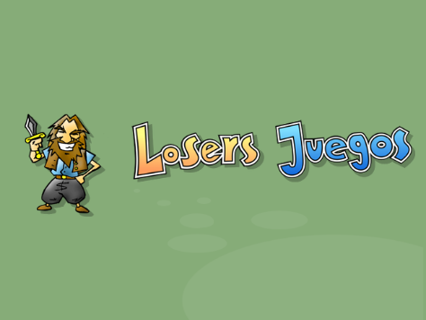
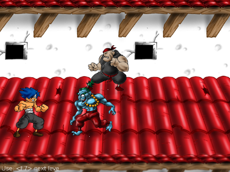

El juego se encuentra dividido en componentes como la presentación, el menú principal, la pantalla de créditos... etc.
A cada uno de estos componentes se los denonina escenas, por ejemplo, una escena es la pantalla de presentación:
el menu principal:
o el escenario de juego:
De forma tal que cada uno de estos componentes es en realidad un objeto individual e independiente de los otros.
Las escenas están dentro del módulo scene y todas heredan de la clase cocos.scece.Scene.
Nota
Dentro del módulo sbfury hay un directorio llamado scene donde se encuentra el código de cada escena.
La escena Game carga un nivel y administra todos los personajes y objetos para ese nivel.
Al iniciar el objeto Game se puede indicar el nivel que tiene que cargar, por ejemplo:
.. code-block:: python
next_scene = scene.game.Game(level=2) common.director.run(next_scene)